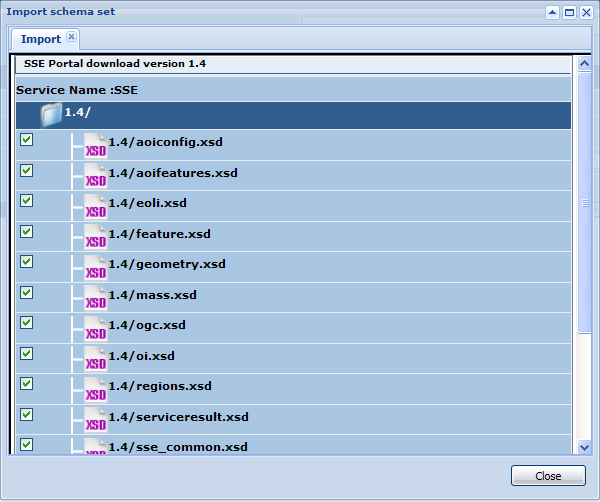

A schema set can be download directly from the SSE portal. In order to obtain this, once selected "no Interface" in the creation wizard, you are redirected to this page:

The schema set can be downloaded clicking on the "Download schema from SSE portal" button. The following window is shown, allowing you to select the version of the SSE schema you want to download.

Once selected, click on the "List schema file" button. The list of files is downloaded from the SSE portal and shown as follows.

Select all files you want to download and click on the button "Import". Selected file will be downloaded and a remark statement will appear in order to remind you that the schema set has been downloaded from the SSE portal.